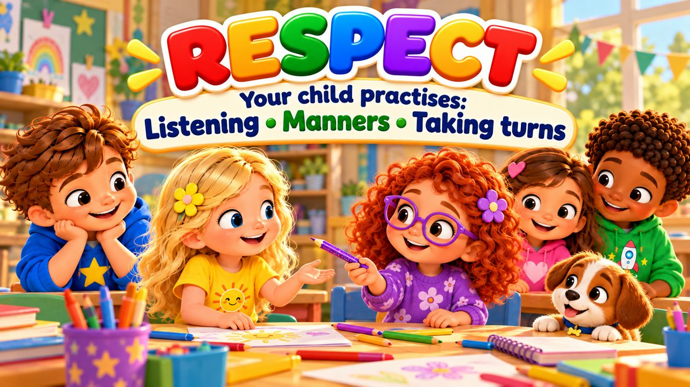
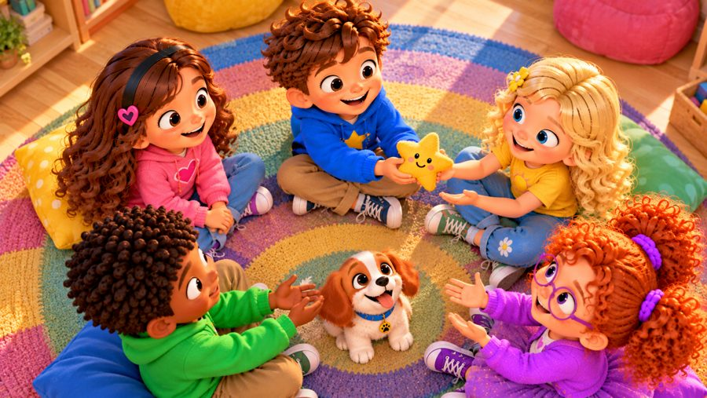
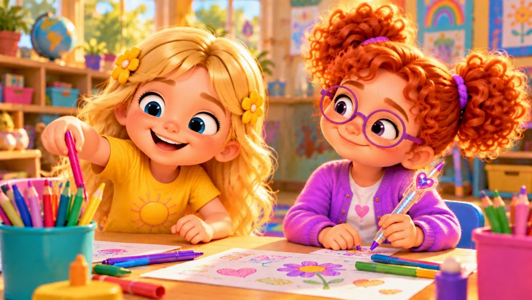

Respect Everyone!
A respect song for kids! 💚 Sing along with Max, Mia, Jay, Lily, Rosie and Buddy the puppy as they learn what respect looks like every day: listening when someone talks, waiting your turn, asking before you take, and giving others space.
"Respect Everyone!" is a sing-along respect song for kids. Max waits for his turn to share his idea, Lily asks before borrowing Rosie's shiny pen — and says "okay" when Rosie says "not right now" — and Buddy learns to give Jay a little space. With a big R-E-S-P-E-C-T chorus and karaoke lyrics on screen, it's perfect for preschool, kindergarten and early elementary kids (ages 3–8), at home or in the classroom.

▶💡 Why this skill matters: respect
Respect means listening, waiting our turn, asking before taking and treating others as we want to be treated. It makes classrooms calmer, friendships stronger and helps children feel respected too. Show respect in small everyday moments — say please and thank you, and listen fully when your child talks.
👨👩👧 What your child learns
- Listening when someone else is talking
- Waiting for their turn
- Asking before taking — and accepting a kind "no"
- Giving others space when they need it
- Everyone is different, and everyone deserves respect
💬 Talk about it after the song
- How do you show someone you are listening?
- What can you say if a friend says "no"?
- What does it mean to give someone space?
🏅 Quiz & Certificate
Watched the song together? Now read each question aloud — your child points to the right picture. Answer all 6 questions and your child earns a printable certificate!
🔒 The name is only used to draw the certificate on your device. We don't save or send anything.
You did it! 🎉
All 6 answers are right! Type your child's name to make the certificate.
🖨️ Free printables
Free for home and classroom use. Print on A4 or Letter paper.
🖼️ Scenes from the song






🎵 More songs


🎤 Lyrics – Respect Everyone!
Hey!
You are you,
and I am me!
We may think
differently...
And that's okay!
Listen, care,
be kind and fair...
Show respect
everywhere!
Mia was talking to the group,
Max had something to say too.
He almost jumped right in to speak,
then stopped and waited patiently.
Mia finished what she had to say,
then Max smiled:
"Can I share my idea?"
Everyone listened,
everyone had a turn.
That's one way
we show respect!
I can listen when you speak.
I can wait until it's me.
I can use a kind voice too,
and show that I care about you!
Different people,
different ways...
Respect matters every day!
R-E-S-P-E-C-T!
Respect you!
Respect me!
Listen kindly,
wait your turn,
care for others
as you learn!
Ask before you take!
Give each other space!
Kind words,
kind hands,
kind choices every day!
You are you!
I am me!
We all deserve
respect from everybody!
R-E-S-P-E-C-T!
Show respect
to everyone you meet!
Lily saw Rosie's shiny pen,
"Oh, I want to use that!" she said.
She reached toward it,
then thought instead:
"I should ask before I take."
"Rosie, can I use your pen?"
Rosie said,
"Not right now."
Lily smiled:
"Okay, that's fine.
I'll use another one this time."
Later Buddy wanted to play,
but Jay said,
"I need some space."
So Buddy stayed right by his side,
without jumping up this time.
We can ask,
we can listen,
we can hear a "no" too.
Respect means caring
what matters to you!
I can listen when you speak.
I can wait until it's me.
I can use a kind voice too,
and show that I care about you!
Different people,
different ways...
Respect matters every day!
R-E-S-P-E-C-T!
Respect you!
Respect me!
Listen kindly,
wait your turn,
care for others
as you learn!
Ask before you take!
Give each other space!
Kind words,
kind hands,
kind choices every day!
You are you!
I am me!
We all deserve
respect from everybody!
R-E-S-P-E-C-T!
Show respect
to everyone you meet!
Someone is talking?
I LISTEN!
Want to use something?
I ASK!
They say "no"?
THAT'S OKAY!
Someone needs space?
I STEP BACK!
My turn is coming?
I CAN WAIT!
Different idea?
I CAN LISTEN!
Different from me?
THAT'S OKAY!
How do we treat each other?
WITH RESPECT!
We don't have to
look the same.
We don't have to
like the same games.
You may think one thing,
I may think another.
We can still listen
to one another.
Your feelings matter.
My feelings do too.
Your space matters.
And mine does too.
Respect means:
"I matter...
and so do you."
R-E-S-P-E-C-T!
Respect you!
Respect me!
Listen kindly,
wait your turn,
care for others
as you learn!
Ask before you take!
Give each other space!
Kind words!
Kind hands!
Kind choices every day!
Different voices!
Different ways!
We can show respect
every day!
You are you!
I am me!
And that's exactly
how it should be!
R-E-S-P-E-C-T!
Listen!
Ask!
Care!
Be kind!
Show respect
to everyone you meet!
Your ideas matter.
Your feelings matter.
Your space matters too.
And I'll show you respect...
just like I want
respect from you!
Respect everyone!